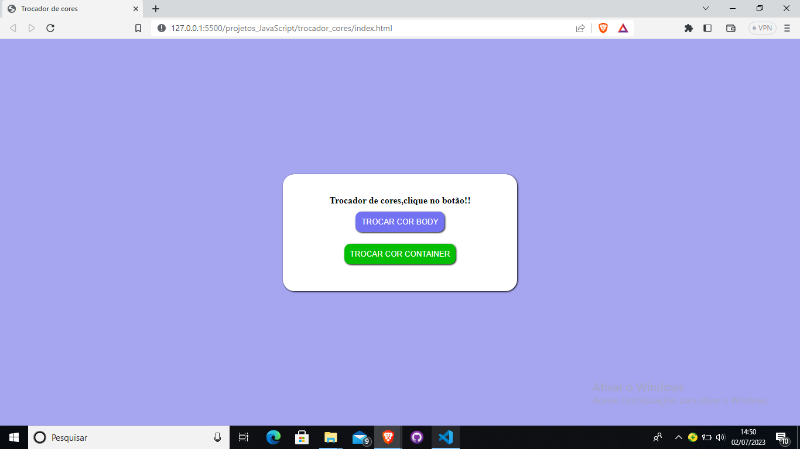
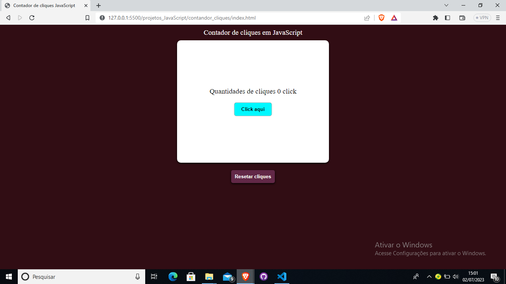
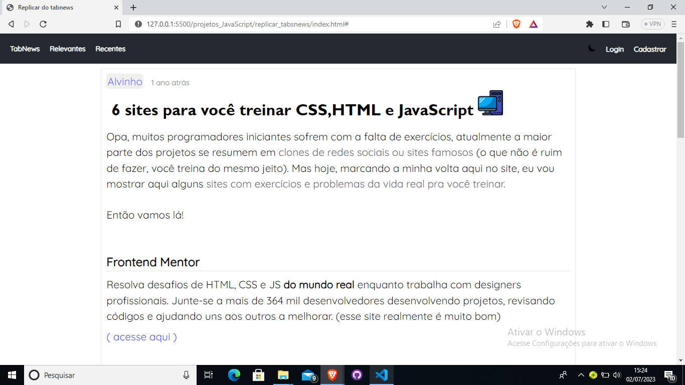

Um pouco sobre mim
Olá me chamo Álvaro Gabriel sou um programador iniciante,estudo programação a mais de 8 meses, e atualmente as principais tecnologias que ando estudando muito é HTML CSS ,também estou estudando muito JavaScript ,sempre gostei de programação desde de quando eu era pequeno
Projetos
( 1 ) - Projeto Trocador de cores
Esse projeto foi relativamente simples e foi um dos meus primeiros projetos trabalhado com JavaScript, projeto tem dois botões,um que irá trocar a cor do body (corpo principal) e outro irá trocar a cor do container(corpo menor). Clique aqui para acessar
( 2 ) - Projeto Contador de cliques
Esse projeto também é um projeto bem simples,mas quebrei um pouco a cabeça para fazer a logica por trás do projeto kkk,esse projeto foi muito importante para que eu pudesse entender um pouco mais sobre como funciona a linguagem JavaScript esse projeto também tem dois botões,um irá contar os cliques e outro irá resetar os cliques. Clique aqui para acessar
( 3 - ) Replicar do TabsNews
Esse projeto foi até agora uns dos maiores projetos que já fiz até o momento,como está escrito no título do projeto,ele não foi uma ideía propria e sim uma tentativa de replicar de um site que utilizo muito para meus conhecimentos de programação ( TabsNews ),não repliquei o site inteiro e sim só uma uma pequena pagina do site,ja que o site é gigante ;-;. Clique aqui para acessar
Bem..Por enquanto esses são os projetos presentes no meu portífolio,ainda pretendo colocar mais projetos e melhora muito o portífolio a medida que eu for avançado com meus estudos,muito obrigado se você viu até que aqui,espero que tenha gostado :D